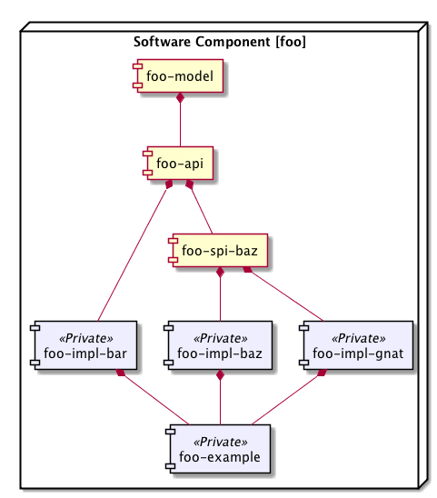

Modularity - Definition
“Modularity” means dividing complex software development into parts (modules), with the intent to simplify development and maintenance. Presumably, all of us developers and software architects know of modularity and realize that it is a Good Thing - in particular for large-scale enterprise development to avoid the accumulation of complex, dependency-tangled and optionally untested code (a.k.a. “legacy code”).
Modularity yields advantages in two main groups:
-
Software engineering improvements. In plain english, modularity can help you structure your code and version control system (VCS) in a better way. Applied correctly, modularity should simplifiy the process of learning a new codebase for developers and lay the grounds for better deployment, scaling and monitoring.
-
Runtime improvements. To be effective, modularity needs be enforced in the running JVM. The Nazgul Framework is built in compliance with OSGi, which is one of the best efforts to date to enforce modularity in a running JVM. Therefore, all projects using the Nazgul Framework development model will take advantage of the runtime container - both standalone or within OSGi/JEE containers. While there have been some long-running efforts from major players in the Java area to provide a Java module system with general use, OSGi seems one of the best solution for modularity in existing JVMs today.
While modularity is fairly simple to define on a conceptual level, it can be somewhat more complex to design, implement and enforce. The Nazgul project defines a battle-proven development model to simplify introduction and use of modularity in (large-scale) software engineering projects. The Nazgul development model is matched by a scalable and manageable deployment model; it is important to consider the runtime state from the start of development.

Modularity for Software Engineering improvements
“Everything Should Be Made as Simple as Possible, But Not Simpler”
The Nazgul Framework provides a development model built around separation-of-concerns. by dividing development into Nazgul Software Component (“NSC”) modules consisting of collaborating maven projects, we recieve improved overview and better architecture. Even small projects benefit from dividing their public API into one project and their implementation into another. As the project codebase or number of developers grows, this benefit becomes more apparent.
Modularity for JVM runtime improvements
The Nazgul Framework provides fully OSGi-compliant projects, where model, API and SPI project types export all packages as public, whereas the implementation projects hide all their classes (i.e. having completely private packages).
This implies that Nazgul Software Component (“NSC”) modularity can be enforced in all modern JEE servers as well as within OSGi runtimes; the latter case enabling hot-redeployment of services to achieve near-100% uptime for a running server.